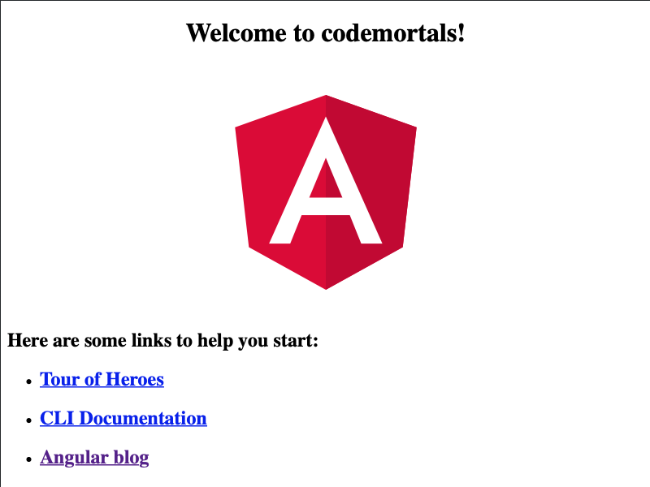
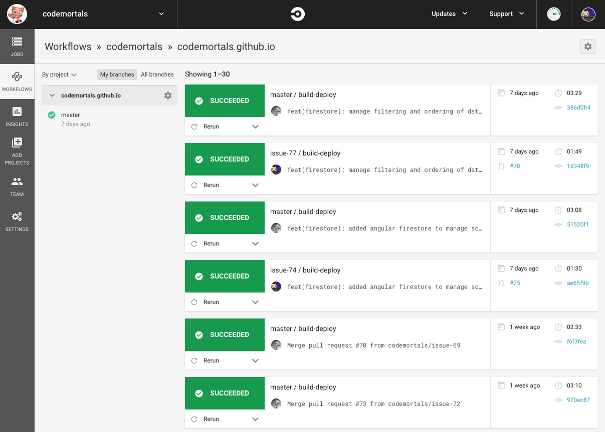
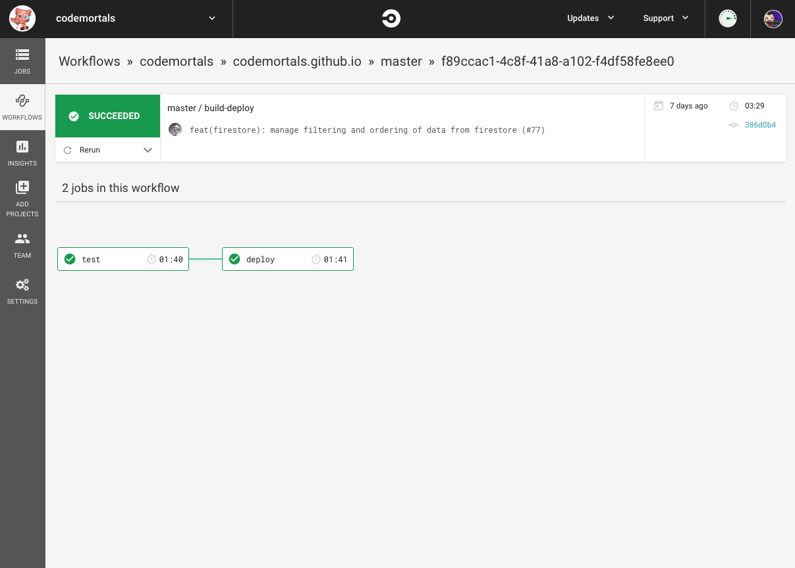
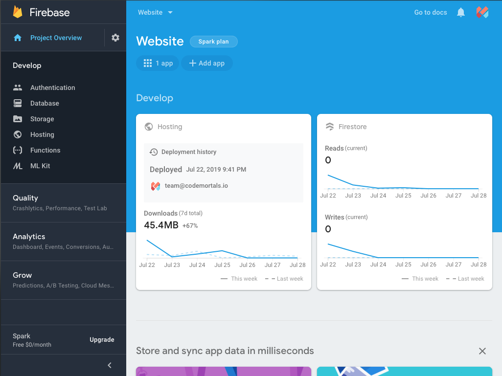

Pipeline Driven Development
Angular / Firebase / Cypress
by
Code Mortals
ngular
Framework built by Google
- Cross Platform
- Speed and Performance
- Productivity
- Full development pipeline
Get Started
$ npm i -g @angular/cli
$ ng new codemortals
? Would you like to add Angular routing? Yes
? Which stylesheet format would you like to use? (Use arrow keys)
CSS
❯ SCSS [ https://sass-lang.com/documentation/syntax#scss ]
Sass [ https://sass-lang.com/documentation/syntax#the-indented-syntax ]
Less [ http://lesscss.org ]
Stylus [ http://stylus-lang.com ]
cd codemortals
npm start
open browser http://localhost:4200

Continuous Integration (CI)
Automation Engine
- Simplifies team processes
- Provides rapid feedback
- Upgrade project confidence
- Reduces delivery overheads
CircleCI
version: 2
jobs: ....
workflow: ....
circle.yml
jobs:
build-code:
docker:
- image: circleci/node:10
steps:
- checkout
- run: npm install
- run: npm run build
build-docs:
docker:
steps:
workflow:
- build-code
- build-docs


Continuous Delivery (CD)
Deployment Automation
- Frequent release cycle
- Iterative improvements
- Repeatable process
- Enables change
Firebase

$ npm i --save-dev firebase-tools
$ npx firebase login
$ npx firebase init
? Which Firebase CLI features do you want to set up for this folder? Press Space to select features, then Enter to confirm your choices.
◯ Database: Deploy Firebase Realtime Database Rules
◯ Firestore: Deploy rules and create indexes for Firestore
◯ Functions: Configure and deploy Cloud Functions
❯ ◉ Hosting: Configure and deploy Firebase Hosting sites
◯ Storage: Deploy Cloud Storage security rules
=== Project Setup
? Select a default Firebase project for this directory:
[don't setup a default project]
❯ codemortals-website (Website)
[create a new project]
=== Hosting Setup
? What do you want to use as your public directory? dist
? Configure as a single-page app (rewrite all urls to /index.html)? (y/N) y
✔ Wrote dist/index.html
i Writing configuration info to firebase.json...
i Writing project information to .firebaserc...
✔ Firebase initialization complete!
$ npx firebase login:ci
Visit this URL on any device to log in:
https://accounts.google.com/o/oauth2/auth?.....
Waiting for authentication...
✔ Success! Use this token to login on a CI server:
1/xxxxxxxxxxxxxxxxxxxxxxxxxxxxxxxxxxxxxxxxxxx
Example: firebase deploy --token "$FIREBASE_TOKEN"
deploy: &deploy
docker:
- image: google/cloud-sdk
steps:
- checkout
- run: npm run build
- run: npx firebase use --token $FIREBASE_KEY
- run: npx firebase deploy --token $FIREBASE_KEY
deploy-dev:
<<: *deploy
deploy-prod:
<<: *deploy
workflow:
- build-code
- build-docs
- deploy-dev:
context: website-dev
requires:
- build-code
filters:
branches:
only: development
- deploy-prod:
context: website-prod
requires:
- build-code
filters:
branches:
only: production
Cypress
Browser testing automation
- Fast and Reliable
- Runs on the CLI or Desktop
- Real-time reloading & time travel
- Continuous regression testing
$ npm i cypress
$ npm i cypress-cucumber-preprocessor
"scripts": {
"build": "ng build",
"start:test": "serve -s -p 8080 dist",
"cypress:run": "cypress run",
"cypress:open": "cypress open"
}
describe('User authentication', function() {
it('Successful login of a valid user account', function() {
cy.visit('/login');
cy.get('form')
.within(() => {
cy.get('input[id="username"]')
.should('be.empty')
.type('team@codemortals.io')
cy.get('input[id="password"]')
.should('be.empty')
.type('ValidPassword')
cy.get('button')
.contains('Login')
.should('not.be.disabled')
.click()
});
cy.location()
.should((location) => {
expect(location.pathname).to.eq('/account');
})
});
});
Cucumber
Gherkin Syntax
Scenario: Describe the scenario
Given there is a precondition
When an action or input occurs
Then an outcome should be observed
Gherkin Example (Happy Path)
Scenario: Successful login of a valid user account
Given the "/login" page is open
When the "username" field is set to "team@codemortals.io"
And the "password" field is set to "ValidPassword"
Then the "Login" button should be "enabled"
When the "Login" button is clicked
Then the "/account" page is open
Gherkin Example (Sad Path)
Scenario: Failure to login with an incorrect password
Given the "/login" page is open
When the "username" field is set to "team@codemortals.io"
And the "password" field is set to "IncorrectPassword"
Then the "Login" button should be "enabled"
When the "Login" button is clicked
Then the "/login" page is open
And an error message says "Invalid credentials"
Step definition
import { Given } from 'cypress-cucumber-preprocessor/steps';
Given('the {string} page is open', (path) => {
cy.visit(path);
});
Cucumber
The benefits (BDD)
- Collaborative (human readable)
- Re-usable step definitions
- Iteratively improve steps
- Enables consistency
Automate everything!
Whatever your projects needs - automate it now
- Functional Tests
- Performance
- Security
- Accessibility
- Deployment
- ...and much much more!
Final Thoughts
We are always learning, try one new thing every day
- TypeScript
- BDD / Gherkin (Cucumber)
- RTFM - documentation varies
Any Questions?

P.S. Don't forget to follow us on socials and subscribe on YouTube
Slides are Open Source on
https://github.com/codemortals/presentation-pipeline-driven-development